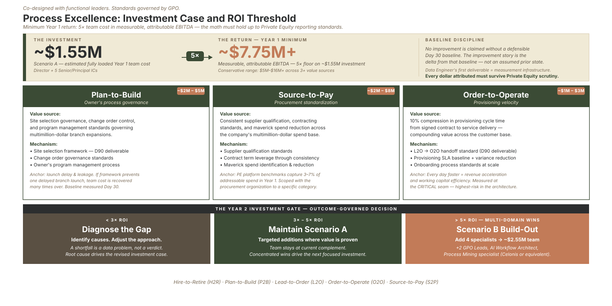

Part 6 of the "How Would You Build It?" series · by Jeffrey Benson
A process excellence function inside a private-equity-backed company is not justified by a good story. It's justified by dollars. And the fastest way to lose a sponsor's trust is to talk about value in the language of activity, decks produced, processes mapped, workshops held, instead of the language of the P&L.
So I'd do something most people in this seat avoid: I'd put a number on the function before anyone asked me to.
Strategy
The bar I set on myself
The function must return at least five times its fully loaded cost in measurable, attributable improvement. If it doesn't, we revise it. If it still doesn't pay, we wind it down.
I want that bar in the room from Day 1, and I want it stated out loud, because it does three things at once. It disciplines my own choices about where to point a lean, senior team. It tells the sponsor I understand exactly why the function exists. And it builds trust through a kind of honesty most internal functions never offer: a willingness to be measured, and a willingness to be wrong.
Note what that multiple is measured against: the function's fully loaded cost, the team's budget. That's the right denominator for a value-creation function, and it's a number everyone in the room can see.
Rigor
No claim without a baseline
Here's the discipline that makes the number credible instead of aspirational: no improvement is claimed without a defensible baseline.
That's why one of the first deliverables, inside the first thirty days, is baseline measurement for each place the function intends to create value. The improvement story is always the delta from that baseline, not the gap from some assumed prior state that no one wrote down. At Meridian Field Services, the data specialist's very first work product isn't a dashboard; it's the baseline infrastructure that makes every later claim of value defensible to a finance team that will, rightly, push back.
If you can't measure where you started, you can't prove what you changed. Skip the baseline and your value story is just narrative wearing a number.
Sources
Where the value actually comes from
For Meridian, I'd point the function at three or more sources of measurable value in the first year, each scoped conservatively and tied to a specific sponsor:
- Plan-to-Build owner's-process governance. This is the capacity engine, where the largest capital is committed and the largest unmanaged risk lives. Tightening the owner's process, site selection and feasibility risk, program governance, change-order control, protects capital that would otherwise leak through avoidable rework and delay. A single prevented misstep here can pay for the whole team.
- Source-to-Pay standardization. Consistent supplier qualification, contracting standards, and reduced off-contract spend produce value through better terms and shorter cycles. Even a modest percentage of a large, fragmented spend base is a number with real weight, scoped in partnership with the finance organization.
- Order-to-Operate velocity. Every day faster from signed contract to live, billable delivery is working capital freed and revenue recognized sooner, and the effect compounds across a growing customer base.
And these three domain-level sources are only half the map. Just as much value tends to sit inside each process, in the ordinary waste a deeper look surfaces: redundant steps, rework loops, and the sprawl of overlapping systems that quietly carry licensing and maintenance cost. Some of the most durable hard-dollar savings I've seen came not from a new initiative at all, but from decomposing a bloated process, cutting the redundant steps and handoffs, and retiring the duplicate or end of life systems off their maintenance contracts entirely.
None of this is exotic. That's the point. The value comes from governing the handoffs between domains and draining the waste inside them, from standardizing decisions that were previously made five different ways, not from chasing a clever new initiative.

ROI Investment Case: Structuring team costs against EBITDA lift targets to ensure the function pays for itself at a target 5× ROI threshold.
Governance
The honesty of a wind-down clause
The bar I set has a decision tree attached, and the last branch is the one that matters most:
- If the function clears five times its cost with wins across multiple domains, the case for expanding it writes itself.
- If it lands somewhere between three and five times, hold steady and add only where the value is already proven.
- If it comes in under three times, we have an honest conversation about whether the function should continue, and we revise it or wind it down.
I want that last line explicit, because a function that cannot earn its keep should not survive on the strength of its narrative. Naming that bar disciplines me more than anyone else. It keeps the team pointed at value the business can actually feel, rather than at the comfortable work of producing more documentation.
I hold my own work to that same test, and I have for years. The infrastructure I've built has consistently returned many times what it cost to put in place, comfortably past the floor I'm describing here. I set the bar where experience tells me it belongs, not where I'd like it to be. And I'm deliberate about not claiming value that depended on the work of others; if I can't cleanly attribute it, I don't count it. That restraint is part of what makes the numbers I do claim trustworthy.
Tooling
Letting the story tell itself
There's a practical problem buried in all of this: the before-and-after story is brutal to assemble by hand, and it tends to get built the night before a board review, from spreadsheets nobody fully trusts.
That's one of the reasons I'm building the instrument I've mentioned through this series (working name: Forester). When every process carries its own measures and a current-state model can be paired against a future-state one, the transformation story, the change in cycle efficiency, in cost, in capacity, generates itself, clearly labeled as estimated where it's projected and observed where it's measured. A function that has to commit to a number deserves an instrument that can show the number honestly, on demand, rather than reconstructing it under deadline. The discipline of earning your keep is a lot more sustainable when the proof is a query instead of an all-nighter.
This is the end of the series, so let me close with the question the whole thing has been building toward: could your process, operations, or transformation function survive a wind-down test? If you measured what it returns against what it costs, and committed in advance to acting on the answer, what would you find? It's an uncomfortable question, and it's exactly the one that separates a function that earns its place from one that merely occupies it. I'd genuinely like to hear how you'd approach the answer.
Thanks for following the whole arc, from validating the mandate, through owning the architecture and governing the seams, to building the team, earning adoption, and proving the value. If you're carrying a version of this build inside your own company, that's the conversation I most enjoy having.
This completes the "How Would You Build It?" series. Start at the flagship if you came in partway through.
Sources: Independent research on Process Excellence and Global Process Ownership (GPO) framework deployments. Practical applications of standard work, organizational design, and continuous improvement metrics in high-growth rollups.